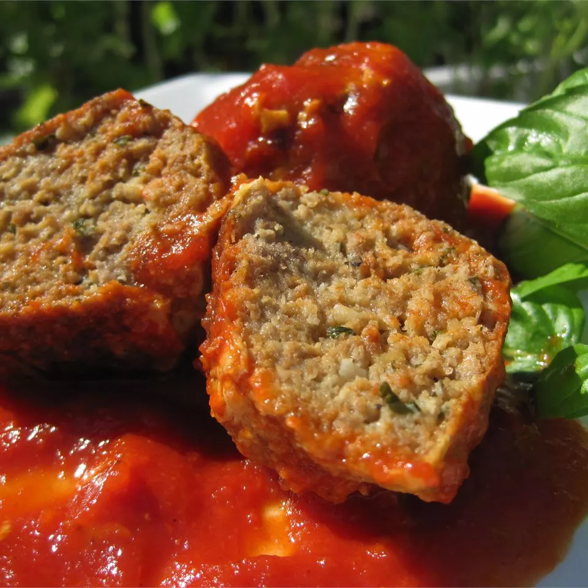

Meatballs

This is the best meatball recipe I have ever tried!
I've used the combination of pork, beef,
and veal but you can make them with just ground beef and they still taste great.
Definitely use fresh bread crumbs and freshly grate your cheese instead of using the canned variety...
It really does make a difference!
Ingredients
- Ground meat
- Onion and garlic
- Seasonings and herbs
- Cheese
- Olive oil
Steps
- Combine the first eight ingredients in a bowl.
- Add the bread crumbs and slowly add the water.
- Shape the mixture into meatballs.
- Fry the meatballs until they're all brown and crisp.